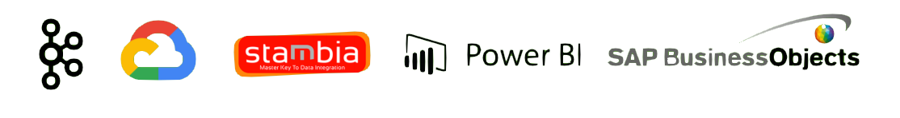

ASSISTANT CHEF DE PROJET - STAGE
Contexte :
Au sein de l'équipe Supply IT, nous déployons diverses applications autour de
l’entrepôt et du transport. Pour documenter et accompagner le passage au RUN de
ces applications, nous recherchons un assistant chef de projet.
Ta mission si tu l'accepte ! :
- Tu travailles au côté des équipes projet IT et RUN ;
- Tu développeras des extractions vers les autres produits de l’écosystème Leroy Merlin ;
- Tu participeras aux chantiers techniques de supervision, automatisation des déploiements et plan de production ;
- Tu seras chargé(e) de documenter et de vulgariser les procédures IT pour le RUN ;
- Tu rédigeras des cahiers de recette IT de non-régression à destination du RUN ;
- Tu cartographieras les flux et les process IT.
Profil Recherché :
- Tu es issu(e) d’une formation supérieure IT;
- Tu es autonome et organisé ;
- Tu as une appétence pour la logistique ;
- Tu es synthétique et à l’aise dans la rédaction de documentation.
Tes outils : 